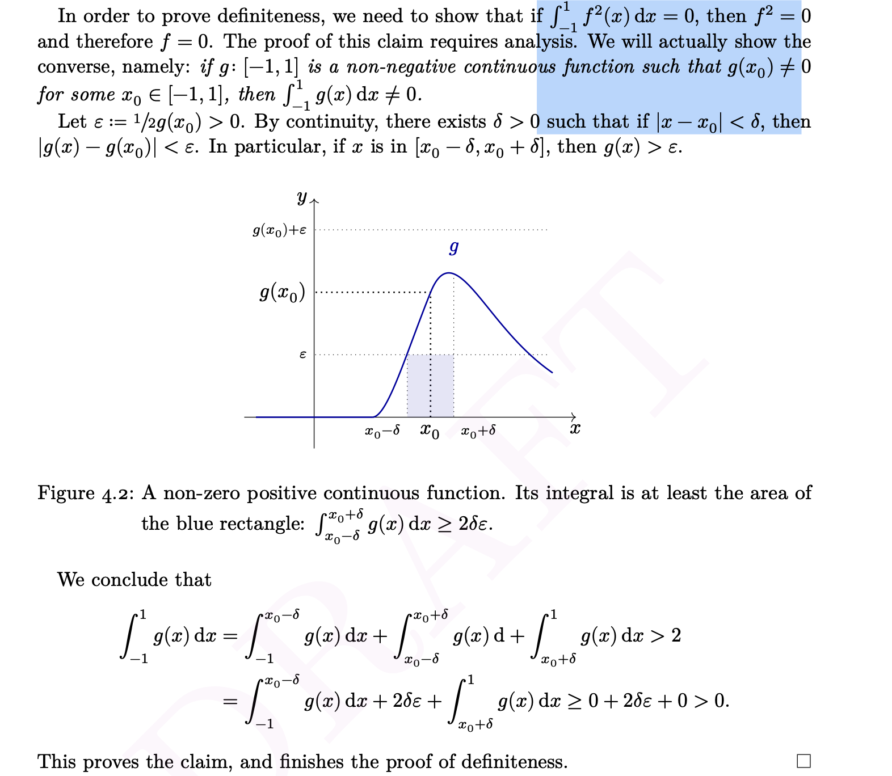

Analysis1
Preface
The first section here is the knowledge that attracts most of my interests on this module, followed by the lecture notes I tapped when I am on the journey of this module.
The begining main idea of Analysis about the establishment of real number
Motivation
f(x)+f(y)=f(x+y) (addition in linearity in linear transformation)
(a line across the original point)
1–>1+1–>1+1+1—>n positive integer(addition is needed/1 is needed)
0—>0-1—0-1-1—-n positive integer(addition is needed/0 is needed)
\(\frac{p}{q}\)—- rational number(multiplication is needed)
Since the rational number is countable(|N|=|N\(\times\)N|=|Q|) but irrational number is uncountable, we could not directly go ahead from Q to R\Q. Fortunately, we have the property of density of irrational number(of course also rational number) in R. In this case we could introduce limit here, and also continuity
This means that, usually, if a situation in rational number is true, then in the whole real number it is almost true.
Finally we get a whole line across the original point here.
Example1
If f(x) is continuous on R. g(x)=f(x) when x is a rational number. Then we have g(x)=f(x) on R.
Proof
Use sequence to think intuitively and write down the proof rigorously:
Without loss of generalization, here we let our R-continuous function to be \(x^2\).
question: If f is continuous on [a,b], f(x)=\(x^2\) if x \(\in\) R\Q. Show: f(x)=$x^2, xR $ in [a,b]
proof:
Firstly we write down Sequential criterion of limit which we will use to finish the proof:
(Sequential criterion for limits of functions). Let \(f: A \rightarrow \mathbb{R}\). The following are equivalent. 1. \(\lim _{x \rightarrow a} f(x)=\ell\). 2. For any sequence \(\left(a_n\right)_{n \in \mathbb{N}}\) with \(a_n \in A, a_n \neq a\) and \(\lim _n a_n=a\), we have \[ \lim _n f\left(a_n\right)=\ell \]
Proof. (1) \(\Rightarrow\) (2): Suppose \(\lim _{x \rightarrow a} f(x)=\ell\). Then \(\forall \varepsilon>0, \exists \delta>0\) such that \(\forall x\) with \(|x-a|<\delta\) and \(x \neq a\), we have \[ |f(x)-\ell|<\varepsilon \]
Let \(\lim _n a_n=a, a_n \in A\) and \(a_n \neq a\) for all \(n \in \mathbb{N}\). Then for the \(\delta>0\) above corresponding to \(\varepsilon, \exists k \in \mathbb{N}\) such that \(\forall n \geq k, n \in \mathbb{N}\), we have \[ \left|a_n-a\right|<\delta \] which implies \[ \left|f\left(a_n\right)-\ell\right|<\varepsilon . \]
That shows that \(\lim _n f\left(a_n\right)=\ell\). \((2) \Rightarrow(1)\) : Suppose for the sake of contradiction that \(\lim _{x \rightarrow a} f(x) \neq \ell\). Then \(\exists \varepsilon_0>0\) such that \(\forall \delta>0, \exists x\) with \(|x-a|<\delta\) and \(x \neq a\) such that \[ |f(x)-\ell| \geq \varepsilon_0 \]
We construct a sequence as follows. Take \(\delta=\frac{1}{n}\). Then \(\exists a_n\) with \(\left|a_n-a\right|<\delta=\frac{1}{n}\) and \(a_n \neq a\) such that \(\left|f\left(a_n\right)-\ell\right| \geq \varepsilon_0 . a_n\) satisfies \[ a-\frac{1}{n}<a_n<a+\frac{1}{n} . \]
By letting \(n \rightarrow+\infty\) and using the Squeeze Theorem(or we could use another method to finish argument here by constructing only one sequence (choose \(\delta\) to be \(1/n\) also and then always find one \(x_n\) in the \(\delta-\) neighborhood and this \(x_n\) is also convergent to a)), we have \(\lim _n a_n=a\). So by the given condition, \(\lim _n f\left(a_n\right)=\ell\). However, for all \(n \in \mathbb{N}\), \[ \left|f\left(a_n\right)-\ell\right| \geq \varepsilon_0 \Rightarrow f\left(a_n\right) \geq \ell+\varepsilon_0 \text { or } f\left(a_n\right) \leq \ell-\varepsilon_0 . \] contradicting to f\((a_n)\) is convergent.
Now we begin our proof:
We have known that if \(a_n\in\) R/Q f(a\(_n\))=\({a_n}^2\)
Since we have the property of “irrational numbers are dense on R” we know that \(\exists a_n\in(a-1/n,a+1/n), \forall n\in N, a\in Q\). This constructs our sequence \(a_n\) such that \(lim_{n\rightarrow \infty} a_n=a, a\in Q\)
This implies that \(lim_{n\rightarrow\infty}f(a_n)=f(lim_{n\rightarrow\infty}a_n)\)=f(a).
(The first equality is because of this proposition:(Limit of composition of functions). Let \(f: A \rightarrow \mathbb{R}, g: B \rightarrow \mathbb{R}\) such that \(R(f) \subseteq B\). If \(\lim _{x \rightarrow a} f(x)=\ell\) and \(g(x)\) is continuous at \(\ell\), i.e. \(\lim _{x \rightarrow \ell} g(x)=g(\ell)\), then \[ \lim _{x \rightarrow a} g(f(x))=g(\ell)=g\left(\lim _{x \rightarrow a} f(x)\right) . \] proof:Proof. \(\forall \varepsilon>0, \exists \delta>0\) such that \(\forall y\) with \(|y-\ell|<\delta\) and \(y \in B\), we have \[ |g(y)-g(\ell)|<\varepsilon \]
For this \(\delta, \exists \delta^{\prime}>0\) such that \(\forall x\) with \(0<|x-a|<\delta^{\prime}\) and \(x \in A\), we have \[ |f(x)-\ell|<\delta \]
So if \(0<|x-a|<\delta^{\prime}\) and \(x \in A\), then \(|f(x)-\ell|<\delta\) and \(f(x) \in B\), which imply that \(|g(f(x))-g(\ell)|<\varepsilon\). This proves the proposition. )
Also, \(lim_{n\rightarrow \infty}f(a_n)=lim_{n\rightarrow \infty}{a_n}^2\)=\((lim_{n\rightarrow \infty}{a_n})^2=a^2\)
So we have f(a)=\(a^2\).
example 2
This could prove the definiteness in an innner product while also show the good quality of continuous function—-one point>0, the whole neighborhood>0

Continuous function
Sequences
- We could see the situation of continuity of a function firstly and intuitively by SEQUENCES then give a proof using limit(sequential criteria of limit), squeeze Thm(directly or constructing sequences),
e.g Thomas function
e.g
My main Analysis learning instructions(philosophy): Theorems come, theorems go, only examples lie forever.
Maybe I could not remember all process of each profound theorems proof, but I could also understand Analysis in depth by handling how to use theorems to solve problems.(But I need to try to know how the proof using each condition in the theorems and internalize it by continuousely thinking) In this case, examples help me a lot.
数学素养和人文素养的结合 一个好的证明是natural的 好的数学是具有普遍性(universal)的（大数学家先看二维再推广到n维） sequence is the most 直观来写分析 北极是无穷大 上帝是无穷 唯一的上帝 正无穷和负无穷最后归到一点 两个无穷大 傅立叶级数 周期函数–周期概念 傅立叶 transform
偏导数存在不一定连续 只有在一元才是对的
open set is countable union of open intervals—
欧拉 拉格朗日比较有创意，数学的趣味，但后面，cauchy weiastrass 给的连续定理，严格化
记得写出存在，（ps：存在主义是生命价值驱动的好心情源泉）
‘Existence’ means beyond any human efforts, and objectively existence. We take the value that we need means a human effort, and because it is arbitrary, we have the freedom to choose one. — Dr. Zhang
max and min need to be found
eg. Finite open sets’ intersection is also open because we can choose the minimum \(\epsilon\)
open set is like interval
Theorem
Let \(O\subset R\) be an open set then \(O=\cup_{n=1}^\infty I_n\) where \(I_n\) is an open interval in R
Def
A collection of open sets covers a set A if \(A\subset \cup O_\alpha\). The collection {\(O_\alpha\)} is called an open cover of A.
Theorem
Let C={\(O_\alpha\)} be a collection of open sets of real numbers then there is a countable subcollection {\(O_i\)} of C such that \(\cup_{O\in C}O=\cup_{n=1}^\infty O_i\)
Any open cover of a set of real numbers contains a countable subcover.
i have proved that:
the closure of \(Q\) = R <–> \(R\approx Q\) <–> \(\forall x\in R, \exists x_n\in Q\) such that\(x_n-->x\). Q is a countable, dense subset of R, R is separable.
accumulation point is different to limit point
eg. \(a_n=(-1)^n (n+1)/n\), 1 and -1 are accumulation points but not limit points because the sequence is not convergent
the usage of proof by contradiction in the proof of limit
eg.
albel: guass is a fox, 走过的地方狐狸尾巴扫掉了
algebra of continuity
\(\exists \delta = min\){\(\delta_1,\delta_2\)}
阿贝尔26过世
Continuity
history
cauchy 1821(decrease indefinitely with those of \(\alpha\))–weierstrass 1874 (\(\epsilon-\delta\))—–
understanding in a long process
- \(\delta\) decides how good the continuity of the function is.
Preface before
Cauchy 1822
What is a limit?–number
Until 1870, the answer to “What is the number” had been known.
(这样来看，学习数分的一年痛苦就不算什么)
实数是什么
实数是一个唯一的一个complete ordered field 如果有别的 它一定和实数是等价的
- dedekind思想推广到n维空间有一定难度（limit inf； limit sup这种大小只有1维空间才有） 所以我们有了cantor的思想 是更高一级的 可以推广到更general空间(norm space;metric space所有metric space的证明思想和构造时候一模一样 方法固定如此)
order–cardinality
1，2，3，n 2，4，6，2n
f(n)=2n
- explaination：无穷大加一个数还是等于无穷大
\(f:N->N\cup\){\(a_1,a_2,a_3\)}
f(1)=\(a_1\) f(2)=\(a_2\),..f(4)=1, f(n+3)=n, this function is one-to-one – bijection
–无穷大加上任意一个实属x还是无穷大
N x N is countable
\(S \subset N\) S is countable
f(m,n)–>\(2^m3^n\)（只要取互质的两个数就ok）
N x N–> N
f: 1-1
\(2^{m_1}3^{n_1}\)=\(2^{m_2}3^{n_2}\)—\(m_1=m_2,n_1=n_2\)
f(N x N)\(\subset\) N
只要映射到N的subset就可以了
2维3维n维
(0,1) is uncountable 反证法
Cantor’s diagonal process
欧几里得是第一个反证法—有无穷多个质数
{p1 p2 p3…}
p=p1+p2+pn+…+1
p1|p…pn|p—p is a prime—contradiction to countable
(0,1)={x1,…x} countable
x1=01a11a12a13. a1n\(\in\){0,1,2,…9} x2=01a21a22a23. a2n\(\in\){0,1,2,…9}
construct a real number
y=0.b1b2b3…
b1 budengyu a11 y budengyu x1
b2 budengyu a22 y budengyu x2
b3 budengyu ann y budengyu xn
bn in {a1,…a}–> y\(\in\)(0,1) but y\(\notin\){\(x_1,...x_n\)}
Ex: [0,1) 约等于 (0,1)
proof: Let{p1,p2,….}=(0,1)\(\cap Q\) 分成有理数和无理数
f(0)=p1 f(p1)=p2 f(pn+1)=pn f(x)=x \(x\in (0,1)-\){p1,..pn}
概率 特征函数
Cantor set
进位的概念
导数 积分 无穷级数 –都是极限 极限是什么–数数是什么 – Augustin Cauchy(1789-1846)
- 人文素养
cantor 1872年是不平凡的一年， 有（Weierstrass, Dedekind, Meray, Heine, Cantor）同时提出了实属系统建构的理解 出版著作解决困惑人们2500多年的问题
Weierstrass 法律 数学 喝酒 干架 退学 在中学里边仍然没有与学术脱节 复变函数 椭圆函数（研究在复数平面上的解析函数， C=\(R^2\) a+ib–>(a,b) is an isomorphism） \(C \cup {\infty}\) 相似于球面 \(S^2\) 约等于 \(R^2\cup \infty\) 变成closed and bounded one-point- compactfication 为什么实数不bounded因为无穷 无穷大这点不是实数（不满足实数性质—无穷大加无穷大还是无穷大；无穷大减无穷大是any number）因为
任何单调有界的实属序列都有极限存在—dedekind的假设
dedekind cut
if rational number
毕达哥拉斯的年代的万物皆数是有理数
古希腊哲学 古希腊数学
Thales
做测量工作创出非欧几何这门学问 真正的天才是能够创出一门学问的
牛顿是科学第一人 当人们迷迷糊糊的时候 他打开理性的光
这一切是黑暗的 上帝说让牛顿去吧 于是就有了光
改编圣经的话–文采
毕达哥拉斯定理的证明都是非常有创意的东西
毕达哥拉斯定理十个证明
读慢一点
心浮气躁
数学是需要耐心的
一个城市的发展不应该是盖房子 应该是好的博物馆音乐厅公园 提高人民素养
volume 2 多变数 stolze定理 divergent定理
limit sup limit inf –这个东西就是我的实数
Cantor-==柯西序列。距离概念
\(|a_m-a_n|-->0\). d(\(a_m,a_n\)–>0) metric
equivalent equation equivalent class 实数 实数是一个集合
cantor–集合论
定义是最难的
有共通之处–作为定义
会用定理很重要 不是高斯
用多了就知道是怎么一回事
定理给了条件 哪里用到什么条件 怎么用的
碰到好老师的重要性 姜立夫 量纲自然
complete的完备不是完美 不是 门掉了一个螺丝 找一个螺丝完完全全放上去发挥作用
认识自己 我是螺丝 完完全全发挥我的作用 把长处 恩赐发挥出来 就是complete
有理数在实数中有很多孔隙 把空隙。把accumulation point收紧来
closure of A = B
\(\forall b\in B, \exists\){\(a_n\)} \(\subset A\) such that \(a_n-->b\)
$AB $ not equals to $> 0 $
实数是唯一一个complete ordered field
代数结构—分配律
eg.complex number没有order所以我们定义norm
和闭区间套定理极限思想的联系和区别？？？
Thanks
Thanks to Professor Zhang for teaching us MTH117.
Thanks to Professor A Kun for giving our XJTLU students chances to learn from him, especially his sophisticated personal understanding of Mathematics(and his useful and effective exercise of Analysis). # sup之前的好题
If A is an infinite subset of N, then |A| = |N|,i.e. A is countably infinite.
in fact， N could be any countable set
整理证明所有可以证明sup的方法
定理，对于所有epsilon，epsilon，一般是取个几分之一夹在两者间
为了证明所有upper bound都大于等于某个值（sup），我们假设所有upper bound都小于等于这个值，然后推出矛盾（一般运用Archimedean property，。。。）
假设存在epsilon大于0，使sup- epsilon是upper bound，然后根据题目条件，推出sup-epsilon不是upper bound的矛盾，（特别是某些集合中的特殊的值），得出sup是最小的upper bound
claim s=supS，然后把s的所有范围讨论（ 通过得到某些n使得sups不等于s的矛盾来排除<,>得到等号）
(Though using \(\epsilon\) is the most quickly way but I do not like it at all because it does not show the essence or nature of the supremum or infmum, which also has the part of luck because maybe I understand it totally but because of my poor calculation skill about construction I will not solve it, leading to unhappiness to myself.)
总结了有上界（下界）必定有唯一上（下）确界的两种证明方法，闭区间套定理的证明，以及有限覆盖定理的证明（待internalized）
keep going！ ## 用sup的唯一性证明根号只有唯一正解 将=改为小于放进set里，通过sup的唯一性证明，sup（是set范围内用小于通过limit思想过渡到等于来求解这个极限值）
然后用method4:claim s=supS，然后把s的所有范围讨论（通过得到某些n使得sups不等于s的矛盾来排除<,>得到等号）
if a not empty set has upper bound, then it must have the unique sup.
Prove: if a not empty set has upper bound, then it must have the unique sup.
Method 1: (Completeness axiom)
\[ \begin{gathered} X \neq \phi, \quad Y=\{y \in \mathbb{R} \mid \forall x \in X(x \leq y)\} \neq \phi \\ \\ \forall x \in X, \forall y \in Y, x \leq y \\ \\ \Rightarrow \exists c \in \mathbb R, \forall x \in X, \forall y \in Y, \\ \\ x \leqslant c \leqslant y(\text { Completeness axiom) } \\ \\ \Rightarrow(c \in Y) \wedge(\{\forall y \in Y \mid y \geqslant c\}) \\ \\ \Rightarrow c=\min Y \end{gathered} \]
So \(c\) is the only sup. (uniqueness of minimum element of a set—2 inequalities lead to the equality leading to the only one result).
Method 2: Cantor Nested Interval Property(limit思想).asdfaskfkasdjklsad
We choose a random upper bound \(\gamma, x \in E(\) the set) \[ [x, r]=\left[a_1 b_1\right] \supset\left[a_2, b_2\right] \supset \cdots \left[a_n, b_n\right] \] (each time we use the method of bisection to choose one side Including the point in \(E\) ) $$
\[\begin{aligned} & \text { Since }\left[a_1, b_1\right] \supset\left[a_2, b_2\right] \cdots, b_n-a_n=\frac{\gamma-x}{2^{n-1}} \rightarrow 0, \\ & \beta \in\left[a_n, b_n\right],(n=1,2, \cdots), \lim _{n \rightarrow \infty} a_n=\lim _{n \rightarrow \infty} b_n=\beta \text {(limit thinking of the Cantor Nested Interval) } \\ & \Rightarrow \forall c \in E, c \leqslant b_n \Rightarrow c \leqslant \beta \text { (E } \text {is never on the right of} [a_n,b_n]) \\ & \Rightarrow \forall \varepsilon>0, \exists d \in E, d>\beta-\varepsilon\text { (each} [a_n,b_n] \text { has points in E.(or see the attached picture to see more picisely))} \end{aligned}\]
If a not empty set has lower bound, then it must have the unique inf.
Method 1: same as before.
Method 2: Based on before.
Suppose We choose \(m\) as a lower bound of \(E\). \[ \begin{aligned} & \Rightarrow \forall x \in E, x \geqslant m,-x \leqslant-m \text {. } \\ & \text { Let } F=\{-x \mid x \in E\} \text {. } \\ & \Rightarrow \beta=\sup F \\ & \Rightarrow-x \leqslant \beta, x \geqslant-\beta \text {. } \\ & \forall \varepsilon>0, \exists-d \in E,-d>\beta-\varepsilon, \\ & \Rightarrow d<-\beta+\varepsilon \\ & \Rightarrow-\beta=\inf E \end{aligned} \] \[ \Rightarrow-\sup (-E)=\operatorname{inf} E \text {. } \]
Method 3 more generalized than Method 2’s conclusion (if c is negative then inf(cA)=csupA)
In fact, If \(c<0\), then \(\sup (cA)=\operatorname{cinf} A, \inf (c A)=\operatorname{csup} A\). (and in particular. sup \((-B)=-\) inf \(B\) )
Since if M=supA, \(\forall x\in A,x\leq M,cx\geq cM\), which indicates that cM is the lower bound of cX.
So, \(cA\) has lower bound ( \(s\) )if and only if \(A\) has upper bound(s).(inverse, also true) \(cA\) is not empty if and only if A is not empty.
So, cA has \(\inf (cA)\) if and only if \(A\) has supA \[ \begin{aligned} & \forall c x \in C A, c x \geqslant c M \\ & \text { if } \exists c M', \forall c x \in c A, c x \geqslant c M^{\prime}, c M^{\prime}>c M, \\ & X \leq M^{\prime}, M^{\prime}<M(\forall x \in A) \end{aligned} \]
Contradicting to the condition that \(M=\sup A\)
So \(\nexists C M^{\prime}\) So cM is the largest lower bound \[ \begin{aligned} & \text { so } c M=\inf (c A) \\ & \text { so } c\sup A=\inf (c A) \end{aligned} \]
exercise: (1,2]’s sup–
Method 1
- 2 is an upper bound of [1,2) (obviously)
- if \(\exists \varepsilon>0\), s.t \(2-\varepsilon\) is also an upper bound of \([1,2)\) \[ \begin{aligned} & \because 1 \in[1,2) \\ & \therefore2-\varepsilon \geqslant 1 \end{aligned} \] choose \(2-\frac{\varepsilon}{2} \in(2-\varepsilon, 2)\) Then \(2-\frac{\varepsilon}{2} \in[1,2)\) So \(\exists\left(2-\frac{\varepsilon}{2}\right) \in[1,2)\) while \(\left(2-\frac{\varepsilon}{2}\right)>(2-\varepsilon)\) So \(2-\varepsilon\) is not an upper bound, contradicting to the suppose. So we have proved that 2 is the smallest upper bound, i.e. \(\sup [1,2)=2\).
Method 2
- 2 is an upper bound of [1,2) (obviously)
- \(\forall \varepsilon>0, \exists b \in[1,2)\) with \(b>2-\varepsilon\). We can take \(b=\max \left\{2-\frac{\varepsilon}{2}, 1\right\}\).
exercise: supC=sup(A+B)=supA+supB from Professor A Kun
\[ \begin{array}{rl} \text { if } A\subset R, B\subset R, \text { define: } \\ C :=A+B=\{z \in R: z=x+y, x \in A, y \in B\} \\ D :=A-B=\{z \in R: z=x-y, x \in A, y \in B\} \end{array} \] show that \[ \begin{aligned} & \text { (1) } \sup C=\sup (A+B)=\sup A+\sup B \\ & \text { (2) } \sup D=\sup (A-B)=\sup A-\inf B \end{aligned} \] (1) Proof:: Obviously,\(C\) has upper bounds if and only if \(A\) and \(B\) have upper bounds, and \(C\) is not empty. So \(C\) has sup C if and only if and only if \(A\) has sup \(A\) and \(B\) has sup \(B\). (Completeness axiom).
- prove: \(\sup C \leqslant \sin A+\sup B\). \[ \because x+y \leqslant \sup A+\sup B \] \(\therefore(\operatorname{sip} A+\sup B)\) is an upper bound of \(C\) \[ \therefore \sin C \leqslant \sin A+\sup B \]
- Prove : \(\sup C \geqslant \operatorname{supA}+\) sup B \[ \begin{aligned} & \because \forall \varepsilon>0, \exists x \in A, y \in B \text {, s.t. } \\ & \operatorname{sup} A-\varepsilon<x, \operatorname{sup} B-\varepsilon<y . \\ & \Rightarrow \sup A+\sup B-2 \varepsilon<x+y \\ & \text { i.e. }(\operatorname{sup} A+\sup B-2 \varepsilon)_{\text {max }}<(x+y)_{\text {max }} \end{aligned} \]
Since \(x+y \leq\) sup c We have \(\sup A+\sup B-2 \varepsilon<\sup c, \forall \varepsilon>0\) \[ \begin{aligned} & \text { i.e. } \operatorname{(sup} A+\sup B-2 \varepsilon)_{\text {max }}<\sup C \\ \end{aligned} \]
We. As \(\varepsilon \rightarrow 0\), We have \(\operatorname{sup} A+\sup B \leqslant \operatorname{} \operatorname{sup} C\) So, we have \(\operatorname{Sup} C=\operatorname{Sup} A+\operatorname{Sup} B\). Then, we have \(\sup D=\sup (A-B)\) \[ \begin{aligned} & =\sup (A+(-B)) \\ & =\sup A+\sup (-B) \\ & =\sup A-\inf B \end{aligned} \] (We have proved \(\sup (-B)=-\inf B\) before)
another example
Let M ∈ R and A, B be two bounded, negative subsets of R,0 < x, y < M, ∀x ∈ A, y ∈ B
when we are proving sup C = sup(AB) = sup A · sup B
On the other hand, from the definition of $a^*$ and $b^*, \forall \epsilon>0$ there exist $a \in A$ and $b \in B$ such that\[ a^*-\epsilon<a<a^* \quad \text { and } \quad b^*-\epsilon<b<b^* \]
Then \[ \left(a^*-\epsilon\right)\left(b^*-\epsilon\right)<a b \leqslant a^* b^* \] or ignoring \(\epsilon^2\) term (If ε > 0, then ε, 3ε, ε², ε⁵, they all represent “any number greater than zero”, and ε’ also represents any number greater than zero, so they are equivalent, that is, we can say that they are equal to ε’.) \[ a^* b^*-(a+b) \epsilon=a^* b^*-\epsilon^{\prime}<a b \leq c^* \]
This is true for all \(\epsilon^{\prime}>0\), so \[ \sup A \sup B=a^* b^* \leq c^*=\sup C \]
Combining the above two inequalities, we can conclude that \(\sup A \sup B=\) \(\sup C\). ## an exercise about think good Archimedean number from Professor Andrew Lin(A Kun)
- Consider the set \[ A=\left\{\left.(-1)^n\left(1-\frac{1}{n}\right) \right\rvert\, n \in \mathbb{Z}^{+}\right\} . \]
- Show that 1 is an upper bound for \(A\).
- Show that if \(d\) is an upper bound for \(A\), then \(d \geq 1\).
- Use (a) and (b) to show that \(\sup A=1\). [Solution]:
- We will show that for any \(x \in A, x \leq 1\). Since \(x \in A\), then \(x=(-1)^n(1-\) \(1 / n\) ) for some \(n \in \mathbb{Z}^{+}\). Since \(\frac{1}{n}>0\), then \(1-\frac{1}{n}<1\). We argue our desired inequality in two cases. If \(n\) is even, then \(x=(-1)^n(1-1 / n)=1-1 / n<1\). If \(n\) is odd, then \(x=(-1)^n(1-1 / n)=-1+1 / n<0<1\). In either case, \(x \leq 1\) (in fact, \(x<1\) ) and 1 is an upper bound for \(A\).
- Let \(d\) be an upper bound for \(A\). Thus, \((-1)^n(1-1 / n) \leq d\) for all \(n \in \mathbb{Z}^{+}\). Assume, to the contrary that \(d<1\). Thus, \(1-d>0\). By the Archimedean Property, there exists an \(n \in \mathbb{Z}^{+}\)such that \(1<(1-d) n\). Since \(n>0\), we can rewrite this as \(\frac{1}{n}<1-d\), which is equivalent to \(d<1-\frac{1}{n}\). If \(n\) is even, then \((-1)^n=1\) and we have that \[ d<(-1)^n\left(1-\frac{1}{n}\right) \in A \] contradicting the fact that \(d\) is an upper bound. If \(n\) is odd, then consider instead \(n+1\), which is even. Then, \((-1)^{n+1}=1\) and \[ d<1-\frac{1}{n}<(-1)^{n+1}\left(1-\frac{1}{n+1}\right) \in A \]
This again contradicts that \(d\) is an upper bound for \(A\). Either way, we reach a contradiction and therefore conclude that \(d \geq 1\).
- obviously
lower bound + inequaility —smallest upper bound—sup
another exercise about another episilon from Professor A Kun
- Find the least upper bound for the following set and \[ A=\left\{\frac{1}{2}, \frac{2}{3}, \frac{3}{4}, \cdots, \frac{n}{n+1}, \cdots\right\} \] [Solution]: We note that every element of \(A\) is less than 1 since \[ \frac{n}{n+1}<1, \quad n=1,2,3, \cdots \]
We claim that the least upper bound is \(1, \sup A=1\). Assume that 1 is not the least upper bound. Then there is an \(\epsilon>0\) such that \(1-\epsilon\) is also an upper bound. However, we claim that there is a natural number \(n\) such that \[ 1-\epsilon<\frac{n}{n+1} \]
This inequality is equivalent to the following sequence of inequalities \[ 1-\frac{n}{n+1}<\epsilon \quad \Longleftrightarrow \quad \frac{1}{\epsilon}-1<n \]
Reversing the above sequence of inequalities shows that if \(n>\frac{1}{\epsilon}-1\), then \(1-\epsilon<\frac{n}{n+1}\) showing that \(1-\epsilon\) is not an upper bound for \(A\).
(if n > 1/ \(\epsilon\)-1, \(\nexists \epsilon\) s.t. 1-\(\epsilon\) is an upper bound, contradicting to our suppose)
This verifies our answer.
Prove Cantor Nested Interval Property
Prove:
\(\exists c \in\) all closed internals
- i.e. if the non-empty closed intervals \(I_1 \supset I_2 \supset I_3 \cdots, \exists c \in R\), s.t. \(c\in I_i, \forall i \in \mathbb{N}\), \(c \in\) \(\bigcap_{i=1}^{\infty} I_i\)
If the limit of the lengths of these intervals are 0 then the point is unique
- i.e. if\(\left|I_n\right| \rightarrow 0\), c is unique
\[ \forall \varepsilon>0, \exists I_n(|I_n| < \varepsilon) \Rightarrow c \text { ! } \]
Proof:
- proof of 1
\(I_1=[a_1, b_1]\)
claim \(\forall I_n=[a_n, b_n], I_m=[a_m, b_m]\) i.e. \(a_n \leq b_m\)
(if \(a_n>b_m\), then \(a_m \leq b_m<a_n<b_n\), which means they are separate internals without any intersection.) \[ \begin{aligned} &\text { Let } X=\left\{a_n\right\} (\text { left endpoint set) } \\ &\text { Let } Y=\left\{b_m\right\}(\text { right endpoint set) } \\ & \forall a_n \in X, \forall b_m \in Y, a_n \leq c\leq b_m \end{aligned} \] \(\Rightarrow \exists c \in \mathbb{R}\), s.t., \(\forall a_n \in X\) \(\forall b_m \in Y,a_n\leqslant b_m\).(completeness axiom) We then let \(m=n \Rightarrow c \in I_n\)
- proof of 2
Based on “Any implication is equivalent to its contrapositive”
\[ \begin{aligned} & \text { if } \exists c_1<c_2, \text { s.t. } c_1, c_2 \in I_n, \\ & \forall n \in \mathbb{R}, a_n \leqslant c_1<c_2 \leqslant b_n, \\ & \Rightarrow\left|I_n\right|=b_n-a_n \geqslant c_2-c_1 \end{aligned} \]
We then choose \(\varepsilon=\frac{c_2-c_1}{2}>0\)
then there exists no \(I_n\) s.t. \(\left|I_n\right|<\varepsilon\), since
\(|I_n|\geqslant c_2-c_1 \geqslant \frac{c_2-c_1}{2}\)
So if \(\exists I_n s. t .\left|I_n\right|<\varepsilon\), \(c!\)
prove finite covering lemma
Prove：Finite Covering Lemma \[ \begin{gathered} \text { Def: } S:=\{X\}, \text { ( } x \text { is a set) } \\ Y \subset \bigcup_{X \in S} X \end{gathered} \]
We say. \(S\) is a cover of \(Y\). \[ \text { i.e. } \forall y \in Y, \exists X \in S,(y \in X) \]
Finite Covering Lemma:
If \(I:[a, b]\), \[ I \subset \bigcup_{n \in I} U_n, U_n=\left(\alpha_n, \beta_n\right) \] \(\exists U_1, \cdots U_k\), s.t., \(I\subset \bigcup_{i=1}^k U_i\)
（Summray of Finite Covering Lemma: A closed internal can be covered by finite number of open internals）
proof:
suppose \(I=[a, b]\) could not be coverd by finite number open intervals:
Then we use the method of bisection to separate I,s.t.
\[ \begin{aligned} & I=I_1 \supset I_2 \supset I_3 \cdots I_n \supset \cdots \text { ( all In can not be covered } \\ & \left|I_n\right|=\frac{b-a}{2^n} \rightarrow 0 \\ & \text { Gover) } \\ & \Rightarrow \exists: C \in \bigcap_{i=1}^{\infty} I_i \text { (Cantor Nested Interral Property) } \\ & c_i\in[a_i,b_i]\\ & \Rightarrow C\in I\subset \bigcup U_i\text {(based on the given condition of the proof problem)}\\ & \Rightarrow \exists U=[\alpha,\beta],s.t.c\in U，let ：\varepsilon =min[c-\alpha,\beta-c]\\ & \Rightarrow I_n\subset U \end{aligned} \]

which indicates that at least this \(I_n\) is covered by U, contradicting to the suppose.
so the finite covering lemma is true.
lecture notes

1
everything must be a reason during the process of proof. Patience is necessary!
limit
real number
history
Ancient Greece philosophy
Pythagoras, Archimede, Euclide,etc.
maths behave a discpline
study maths for its own sake! - number theory Q: rational number: a/b, a,b \(\in\) Z, b no 0
Greek believes: “Atoms”–Q are all numbers
- geometry (length of sig \(\in Q\))
discovery: \(\sqrt 2\) in a square or … is not rational—kill
— no understanding of real number, irrational infinity… no corresponding of number and geometry
parallel—square using move
but it is not a possible thing to turn a circle into a square—\(\pi\) is not a rational number —–paradox: zhinuo and wugui—-convergence of a sum (they do not understand infinity and real number)
calculus
Newton Leibniz makes phy a idependent discipline
Newton’s Law–Kepler Law solve ODE:\(GMm/r^2=F=ma=mr^{..}\)
Philosophiae Naturalis Principil Mathematica. every theorem and lemma are detailed proved
–no understanding of real number but a little understanding of limit and infinity
analysis 19 century
Cauchy cantor weierstrass hilbert
understand real number infinity limit
the foundation of maths
Chaper 1: Logic(grammar) v.s. Maths(literature)
we should solve out logic first to logic important in–programming(some derivations of maths)
statement
p
—An assertion that is either true or false but not both
e.g.
Negation of a statement p is a statement which means the opposite of P
~p—-read “not p”
Quantifiers
all, every, each,no(none)—universal quantifiers
some,there exists, there is at least on, etc.—existential quantifiers
P: some a’s are b’s
~P: all a’s are not b’s/ no a’s are b’s
P: some a are not b
~p: all a are b
P10,1.4
Equivalence of statements: Two statements are logically equivalent, if they have the same truth values in all possible situations.
\(A\equiv B\)
‘abstract non-sense’
Them(De Morgan’s laws)
A,B
\(\sim (A \land B) \equiv (\sim A) \lor (\sim B)\)
\(\sim (A \lor B) \equiv (\sim A) \land (\sim B)\)
draw truth table to look at values
交的话（and），都T才T；并的话（or），1T则T
Conditional:
If p(hypothesis/assumption/condition), then q(conclusion/consequence/result).
read: p implies q/assume p, then q.
key point: the implication is False when the rule is broken
\[ \begin{array}{|c|c|c|} \hline A & B & A \rightarrow B \\ \hline T & T & T \\ T & F & F \\ F & T & T \\ F & F & T \\ \hline \end{array} \] Def: p, q,p–>q
1)Converse: q—>p,i.e. if q, then p
2)Contrapositive: (q)–>(p), i.e. if not q, then not p
Prop: (p–>q)\(\equiv\) ((q)–>(p))(a statement and its contrapositive are logically equivalent) \[ \begin{array}{|c|c|c|c|c|c|c|} \hline p & q & \sim p & \sim q & p \rightarrow q & \sim q \rightarrow \sim p & (p \rightarrow q) \equiv (\sim q \rightarrow \sim p) \\ \hline T & T & F & F & T & T & T \\ T & F & F & T & F & F & T \\ F & T & T & F & T & T & T \\ F & F & T & T & T & T & T \\ \hline \end{array} \]
(always remember: implication fails only when the rule brokens instead of……(others))
Proof by contradiction: we want to prove p—>q, we prove (q)—->(p) instead
proof: Assume ~q, if , then if , then … –> ~p, which is contradict to the original assumption p
Hence the assumption ~q is false, i.e. q is true.#
e.g.: n is a natural number. Prove that if n^2 is divisible by 2(p), then n is divisible by 2(q).
Proof: Assume that n is not divisible by 2(~q),—> n is odd(defination), i.e. n =2k+1,k\(\in Z\)
—> n^2 =(2k+1)^2(multiplicaiton)=2()+1, which is odd
—> n^2 is not divisible by 2(~p),
Thus the aassumption that n is not divisible by 2 is false so n is divisible by 2.#
biconditional: p,q,
(p–>q)\(\land\)(q—>p)—p <–> q—-reads‘p if and only if q’.
statement converse
\[ \begin{array}{|c|c|c|c|c|} \hline p & q & p \rightarrow q & q \rightarrow p & p \leftrightarrow q \\ \hline T & T & T & T & T \\ T & F & F & T & F \\ F & T & T & F & F \\ F & F & T & T & T \\ \hline \end{array} \]
Them.: the only case p<–>q is true is then both p and q ture or false
Set Theory p13
proposition
$x,yQ $, x is less than y, \(\exists z\in Q\) s.t. x<z<y.
proof: \(x,y\in Q, x<y\),x=m/n,x=p/q,z=x+y/2\(\in\)(x+x/2,y+y/2),i.e.x<z<y,z=pn+mq/2qn\(\in \mathbb Q\) by defination.
Russel paradox
let R be the set of all sets that are not a member of themself. i.e.R={S|S\(\notin\)S}
so if \(R\in R\),R\(\notin\) R
if \(R\notin R\), R\(\in R\)
if \(x\in A\),then \(x\in B\) is the subset defination of A \(\subseteq\) B.
if \(A\subset B\), A is a proper subset of B. i.e. \(A\subset B\) if \(A\subseteq B\) and \(\exists x\in B\), s.t. \(x\notin\) A
\(N\subset Z \subset Q \subset R\)
Proposition
the empty set is a subset of any set
proof:
method1: (truth table)
method2:
Def
the complement of A is denoted by \(A^c\)
the intersection \(A \cap B\)
the union \(A \cup B\)
Countability and Bijections
Countable Set: A set is said to be countable if it is either finite or has the same size (cardinality) as the set of natural numbers \(\mathbb{N}\). A set is countably infinite if there exists a bijection (a one-to-one correspondence) between that set and \(\mathbb{N}\).
Uncountable Set: A set is uncountable if no such bijection exists, meaning its cardinality is strictly greater than that of \(\mathbb{N}\).
Bijection: A bijection between two sets \(A\) and \(B\) is a function \(f: A \to B\) that is both injective (one-to-one) and surjective (onto).
The Problem: Showing that \(\mathcal{P}(\mathbb{N})\) is Uncountable
method 1: Consider the set \(A = \{ n \in \mathbb{N} \mid n \notin f(n) \}\), f : N → P(N).
we should prove it is not a bijection. so we could prove it is not surjective (P(N) is much bigger than N).
now we ask if f is surjective:
If yes, there exists \(n_0\in N\) s.t. f\((n_0)=\)A, A\(\subset\)N while A \(\in\) P(N)
now we ask: Does \(n_o\in f(n_0)\)
if yes, \(n_0\notin A=f(n_0)\)
if no, \(n_0\in A=f(n_0)\)
(or we discuss the set, we suppose x is in A and based on the condition of being in set A we get A is empty, which is contradicts to “x is in A”)
so f is not surjective, which means f could not be bijective. so p(N) is uncountable.
- eg of a bijection between 2 sets(namely 2 sets with the same size)
N->Z
n|->n/2 if n even
n|-> n+1/2 if n odd
an eg question-Logical Puzzle on Truth of Statements relavent to truth table
Consider the following 99 statements:
- \(S_1\): “Among these 99 statements, there is at most one true statement.”
- \(S_2\): “Among these 99 statements, there are at most two true statements.”
- …
- \(S_{99}\): “Among these 99 statements, there are at most 99 true statements.”
The goal is to determine which statements among these 99 are true.
(hint:Consider the chain of implications from statement \(S_n\) to \(S_{n+1}\). Which statement implies which? )
sol: we fail the hypothesis of \(S_{n+1}\Rightarrow S_n\)，but because
\[ \begin{array}{|c|c|c|} \hline S_n & S_{n+1} & S_n \Rightarrow S_{n+1} \\ \hline T & T & T \\ T & F & F \\ F & T & T \\ F & F & T \\ \hline \end{array} \]
Thus, we conclude that the truth of \(S_n\) implies the truth of all subsequent statements \(S_{n+1}\).
)
\[ S_n \Rightarrow S_{n+1} \] so there exists an \(S_n\), after which are true while before which are false.
so:There are \(100 - n\) true statements.
\[ 100 - n \leq n \implies n \geq 50 \]
There are \(n - 1\) false statements.
\[ n - 1+1\leq 100 - n \implies n \leq 50 \] so The 50th statement \(S_{50}\) is true. Statements \(S_1\) to \(S_{49}\) are false, and statements \(S_{50}\) to \(S_{99}\) are true.
Cardinality
numebr of elements in a finite set: Def: let A be a set, if A contains finitely many elements, then the number of elements of A is called the cardinality of A, denoted by |A|(|A|\(\in Z_{\geq0}\)
A, B have infinitely many elements. If \(\exists f:A->B\) is a bijective map, then we regard the A, B have the same “cardinality”, i.e.|A|=|B|
A x B–Cartesian product
eg
|A|=3, |B|=2, |A x B|=6
map
Question from the Cardinality:
What happens if A has infinitely many elements?
Def: LEt A and B be 2 sets, A map(function)f: A–>B assigns each element in A
there has 3 kinds of maps(see 107)
eg
the graph of f(x) in A x B is f: A–> B(x \(\in A\),y\(\in B\))
inverse defination
if f is a bijective map, so as \(f^{-1}\).
countable
- A set A is called countable if A iseither a finite set of there exists a bijective map f: A to N.(Otherwise is uncountable)
eg
- \(B=[x|x=2n,n\in N\) is countable
proof: for x|–>x/2 of B–>N i) injective , $x_1 $ not = \(x_2\), f(x_1)=x/2, = f(x_2)
ii) surjective, $\forall y\in N $, $\exists x\in B$ s.t. ,f(2y)=x, $2y\in B$
so bijective
- Z is countable (负无穷到正无穷范围内的整数)
f:N–>Z(n|–>n/2 if even, 1-n/2 if odd)
n|–>n/2 if even makes the positive integer possible
1-n/2 if odd makes negative integer possible
and both of them are bijections
so Z is countable
the real number
Limit(Topology version)
triangle inequality is a strong tool
\[ \begin{aligned} & \lim _{x \rightarrow \infty}\left|\frac{\frac{11}{x}-\frac{9}{x^2}}{25+\frac{35}{x}+\frac{6}{x^2}}\right| \\ & |25+\frac{35}{x}+\frac{10}{x^2}\left|=\left|25-\left(\frac{35}{-x}-\frac{10}{x^2}\right)\right|\right. \\ & \left.\geqslant|25|-| \frac{35}{x}+\frac{10}{x^2} \right\rvert\\ \\ & \geqslant 25-\left|\frac{35}{x}\right|-\left|\frac{10}{x^2}\right|\\ & \forall x>10 \\ \end{aligned} \] \[ 25-| \frac{35}{x}\left|-\left|\frac{10}{x^2}\right|>25-\left(\frac{35}{10}+\frac{10}{10^2}\right)=M_1\right. \] Take \(M_2=\frac{22}{M_1 \varepsilon}, \forall|x|>\frac{22}{M_1 \varepsilon},\left|\frac{11}{x}\right|<\frac{M_1 \varepsilon}{2}\) Take \(M_3=\sqrt{\frac{18}{m_1 \varepsilon}}, \forall|x|>\sqrt{\frac{18}{m_1 \varepsilon}},\left|\frac{9}{x^2}\right|<\frac{m_1 \varepsilon}{2}\) \[ \left|\frac{11}{x}-\frac{9}{x^2}\right|<\left|\frac{11}{x}\right|+\left|\frac{9}{x^2}\right| \]
So Take \(M=m \cdot a x\left\{10, \frac{22}{M_1 a}, \sqrt{\frac{18}{m_1 \varepsilon}}\right\}\), we hame \(\forall \varepsilon>0, \forall|x|>m\), such that…<\(\epsilon\)
understanding deeply(explain by myself…)
proof of some theroem
boring things(just practivce epsilon-delta language…)
- \(\lim _{x \rightarrow a} f(x)=\ell\) if and only if \(\lim _{x \rightarrow a^{+}} f(x)=\lim _{x \rightarrow a^{-}} f(x)=\ell\).
Necessary Condition Let \(f(x) \rightarrow l\) as \(x \rightarrow c\).
Then from the definition of the limit of a function: \[ \forall \epsilon>0: \exists \delta>0: 0<|x-c|<\delta \Longrightarrow|f(x)-l|<\epsilon \]
So for any given \(\epsilon\), there exists a \(\delta\) such that: \[ 0<|x-c|<\delta \] implies that: \[ l-\epsilon<f(x)<l+\epsilon \]
Now: \[ \begin{array}{ll} & 0<|x-c|<\delta \\ \leadsto \quad & -\delta<-(x-c)<0 \\ & \vee \quad 0<(x-c)<\delta \\ \leadsto \quad & c-\delta<x<c \\ & \vee \quad c<x<c+\delta \end{array} \]
That is: \(\forall \epsilon>0: \exists \delta>0\) :
(1): \(\quad c-\delta<x<c \Longrightarrow\|f(x)-l\|<\epsilon\)
- : \(\quad c<x<c+\delta \Longrightarrow\|f(x)-l\|<\epsilon\)
So given that particular value of \(\epsilon\), we can find a value of \(\delta\) such that the conditions for both:
(1): \(\quad f\) tending to the limit \(l\) as \(x\) tends to \(c\) from the left
and :
- : \(\quad f\) tending to the limit \(l\) as \(x\) tends to \(c\) from the right.
Thus: \[ \lim _{x \rightarrow c} f(x)=l \] implies that: \[ \lim _{x \rightarrow c^{-}} f(x)=l \] and: \[ \lim _{x \rightarrow c^{+}} f(x)=l \]
Sufficient Condition
Let \(f(x) \rightarrow l\) as \(x \rightarrow c^{-}\)and \(f(x) \rightarrow l\) as \(x \rightarrow c^{+}\).
This means that:
(1): \(\forall \epsilon>0: \exists \delta>0: c-\delta<x<c \Longrightarrow|f(x)-l|<\epsilon\)
and :
(2): \(\forall \epsilon>0: \exists \delta>0: c<x<c+\delta \Longrightarrow|f(x)-l|<\epsilon\)
In the same manner as above, the conditions on \(\delta\) give us that: \[ \begin{array}{ll} & c-\delta<x<c \\ \wedge \quad & c<x<c+\delta \\ & 0<|x-c|<\delta \end{array} \]
So: \[ \forall \epsilon>0: \exists \delta>0: 0<|x-c|<\delta \Longrightarrow|f(x)-l|<\epsilon \]
Thus: \[ \lim _{x \rightarrow c^{-}} f(x)=l \] and: \[ \lim _{x \rightarrow c^{+}} f(x)=l \] together imply that: \[ \lim _{x \rightarrow c} f(x)=l \]
Cantor Set
decimal scale
\(x=0.a_1a_2a_3...\)
[0,1]={\(\sum_{n=1}^\infty a_n/10^n,n\in{0,1,...9}\)}
# [0,1]=\(10^{\infty}\)—(uncountable)
|{\(x_1\)}|\(\subseteq (x_1-\epsilon,x_1+\epsilon), \forall \epsilon >0\) i.e.|{\(x_1\)}|=0
What is compactness?
Fresch <–> H.Lebesgal
Defination
Topology
|\(x_n-x\)|–>0
||\(x_n-x\)|| “norm”
norm–the generalization of the absolute value: ||\(\cdot\)||: V(a vector space)–>[0,\(\infty\))
- ||\(\vec x\)$$0||, \(\forall \vec x\in V\)
||\(\vec x=0\)|| iff\(\vec x=0\in V\)
- ||\(\alpha \vec x=|\alpha||\vec x|\)|| \(\alpha \in \mathbb R\)
triangle inequality
水一个commit
连续性+用sup构造数列
用sequential criterion证明连续性取合适的epsilon来说明数列存在
eg.
A={1/2n} where n \(\in N\)
f(x)=0 when x \(\in[0,1]\) and x is not in A
f(x)=2x when x \(\in A\)
- Prove f is continuous at x when x \(\in[0,1]\) and x is not in A
method 1 sequential
method 2
- Prove f is not continuous at each point on A
method 1 limit or \(\epsilon-\delta\)
method 2 sequencial
a problem about divisible using greatest common factor to solve(even Bezou’s theorem)
Q:“Proof that if a positive integer \(p\) is not a perfect square, then \(\sqrt{p}\) is irrational.”
Sol: Proof by Contradiction:
Assume \(\sqrt{p}\) is rational.
Since \(p\) is not a perfect square, there exist two coprime positive integers \(m\) and \(n\) with \(n > 1\) such that \[ \sqrt{p} = \frac{m}{n} \]
Then \[ p = \frac{m^2}{n^2} \]
which implies \[ m^2 = n^2 p \] i.e. \(n^2 \mid m^2\). Then We want to show that \(n \mid m\):
Suppose \(m^2 = k n^2\), where \(k \in \mathbb{Z}\).
Since \(m\) and \(n\) are both integers, based on prime factorization, we have:
\[ m = p_1^{a_1} p_2^{a_2} \cdots p_k^{a_k} \]
\[ n = p_1^{b_1} p_2^{b_2} \cdots p_k^{b_k} \]
where \(p_i\) are prime numbers, and \(a_i, b_i\) are non-negative integers.
So,
\[ m^2 = p_1^{2a_1} p_2^{2a_2} \cdots p_k^{2a_k} \]
and
\[ n^2 = p_1^{2b_1} p_2^{2b_2} \cdots p_k^{2b_k} \]
Since \(m^2 = k n^2\), we have:
\[ p_1^{2a_1} p_2^{2a_2} \cdots p_k^{2a_k} = k \cdot p_1^{2b_1} p_2^{2b_2} \cdots p_k^{2b_k} \]
This implies:
\[ 2a_i \geq 2b_i \quad \text{for all } i \]
So,
\[ a_i \geq b_i \quad \text{for all } i \]
Thus, \(m\) is divisible by \(n\). Therefore, \(n \mid m\), which is opposite to m and n are coprime. So, \(\sqrt{p}\) is irrational.
method 2: Proof by Contradiction:
Assume \(\sqrt{p}\) is rational.
Since \(p\) is not a perfect square, there exist two coprime positive integers \(m\) and \(n\) with \(n > 1\) such that \[ \sqrt{p} = \frac{m}{n} \]
Then \[ p = \frac{m^2}{n^2} \]
which implies \[ m^2 = n^2 p \] i.e. \(n^2 \mid m^2\). So \(n \mid m^2\)
Since \(n > 1\), it follows that there exists a prime number \(r\) such that \(r \mid n\). (proof using Fundamental Theorem of Arithmetic:
Every integer greater than 1 is either a prime or can be uniquely factored into prime numbers.
If \(n\) is a prime number, then \(r = n\) and clearly \(r \mid n\);
If \(n\) is not a prime number, it must be decomposable into a product of prime factors. Therefore, we can write: \[ n = p_1^{e_1} p_2^{e_2} \cdots p_k^{e_k} \]
where \(p_i\) are prime numbers and \(e_i\) are positive integers.
Since \(n\) is a product of prime factors, at least one of these prime factors \(p_i\) must divide \(n\).
Let \(r = p_i\), which is one of the prime factors. Then \(r \mid n\).
Thus, in both cases, whether \(n\) is a prime or not, there exists at least one prime number \(r\) such that \(r \mid n\).)
Thus \[ r \mid m^2 \quad \text{and} \quad r \mid m \] (proof of \[ r \mid m^2 \quad \text{and} \quad r \mid m \]: proof1 using prime factorization as method 1’s:
\(r \mid m^2\) and r is a prime so \(r=p_i\) corresponding to the exponential of \(2a_i\)
since \(a_i \geq 0\), so \(a_i\) is at least 1 . proof2 using if r is a prime and r|ab, then r|a or r|b:
Suppose \(r \nmid a\) and \(r \nmid b\) (contradiction assumption).
Let \(\gcd(a \cdot b, r) = d\) (where \(d\) is the greatest common divisor of \(a \cdot b\) and \(r\)).
Since \(d \mid r\), \(d\) is a divisor of \(r\) (since \(r\) is a prime number).
Therefore, \(d\) is either \(r\) or \(1\) (since \(r\) is prime).
if \(d = r\), we have \(\gcd(a \cdot b, r) = r\). This implies \(r \mid a \cdot b\).
Since we assumed \(r \nmid a\) and \(r \nmid b\), it contradicts our initial statement based on Properties of greatest common divisor with its proof using Bezou’s theorem;
If \(d = 1\), we have \(\gcd(a \cdot b, r) = 1\). This implies \(r \nmid a \cdot b\), which contradicts our assumption that \(r \mid a \cdot b\).
Thus, the contradiction shows that our assumption \(r \nmid a\) and \(r \nmid b\) must be false. Therefore, \(r\) must divide at least one of \(a\) or \(b\).
)
Since \(m\) and \(n\) are coprime, this leads to a contradiction.
Therefore, \(\sqrt{p}\) must be an irrational number.